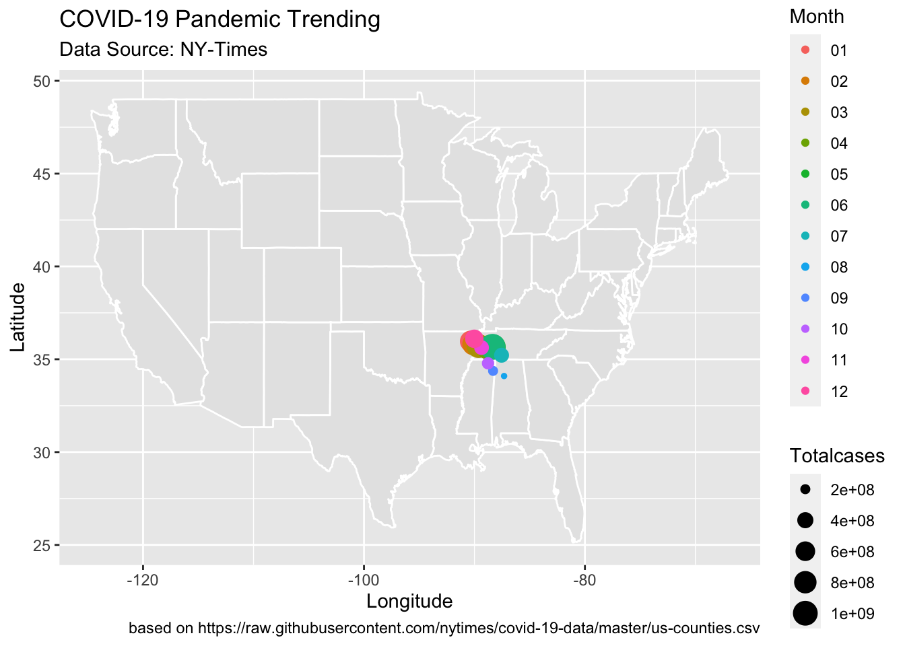
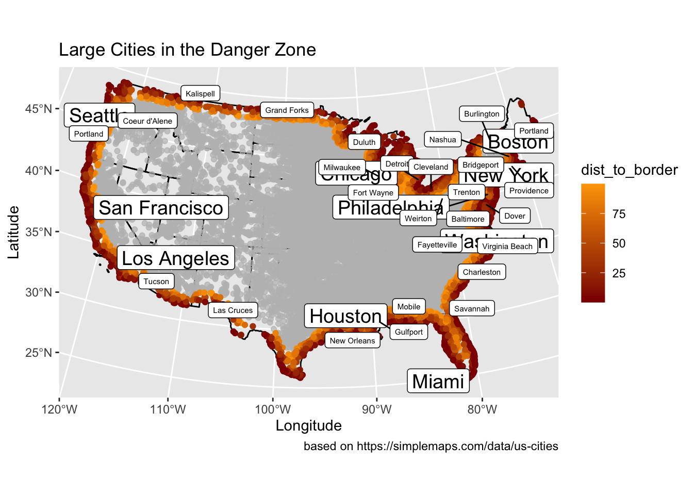
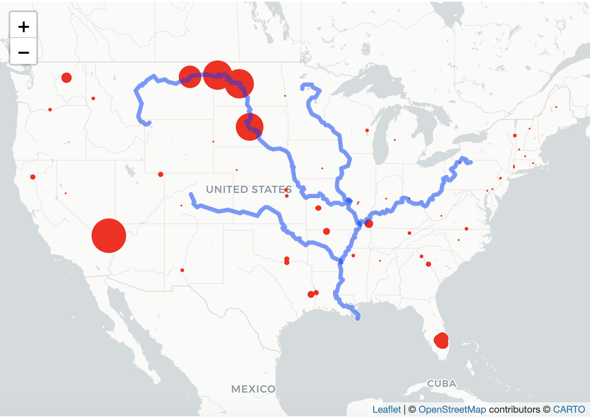
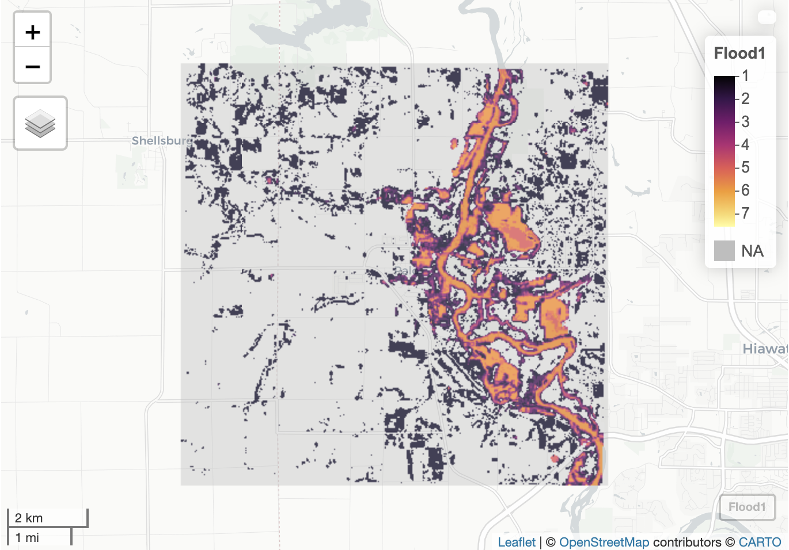

Geog13 2021 and GEOG 176A 2020
instructor: Mike Johnson
TA: Jiwon Baik
- TAed for the class leading students to make the first project in the GIS programming class using R.
- Students to be familiar with R and Rstudio: what the basic logic is, and how to use it.
- create a brief personal website using R and Github, that everyone visits it online easily.
- Make a good start on Geographic Information Science!
In the lab02, I worked with COVID-19 data in US, monitoring California’s daily new cases, plotting 4 interesting states’ changes of cases, and evaluating the pandemic trending on space and time. Here is the link of workflow.
COVID-19 Data Wrangling
- I was familiar with Rstudio gradually from practices, for instance, analyzing raw data with packages and plotting, combination of raw data, and extracting the variables from raw data.
- In the COVID-19 data wrangling, I started to realize the relationship among data. Data will be influenced by other variables, chronologically and spatially.
- The structure of the code is important too. Well-structured code is easier to debug and present.
Here is my highlight in the project: 
In the lab03, I figured out the geographic relationship between US cities and borders of national, states, and near countries. Then I evaluated the 100-mile Border Zone described in ACLU article.
Distances and the Border Zone
- I learned how to build sf objects from R packages and CSVs, using computer to program the projection which studied in the Geog w12.
- In the project, I understand the calculation of distance between geographic objects, such as point, line string and area.
- And I can plot clear map with distance data by ggplot.
Here is my highlight in the project: 
In the lab04, I started to analyze the geographic points in the polygon, with the functions defined by myself. With the raw data of dams in the United States, I tried to find the relationship between the dam distribution and geographic information.
Tesselations, Point-in-Polygon
- I understand how the tessellation works. Each tessellation has its own advantages and disadvantages, and different attributes.
- I analyze the dams data in the United States with the voronoi tessellation, defining the numbers of dam in each tiles. With the distribution of different types, I demonstrate the possible reasons of the distribution.
- And the leaflet map also be drawn, showing in largest and high_hazard dam in each state with Mississippi River System.
Here is my highlight in the project: 
In the lab05, we learned to use raster layers to analyze the continuous data, a case of flooding in Palo, Iowa. We used the raster pacakge and raster data knowledge to create flood images using multiband Landsat Imagery, thresholding and classification methods.
Raster and Remote Sensing
- First time I deal with the continuous data with raster data model, and map algebra to analyze elevation, precipitation, and climate.
- In the case of Palo, I use kmean-rasters compared with Landsat band calculating the flooding cells shared by each layers.
- And I extracted a specific location captured by the drone from layers to define its value in the raster data.
Here is my highlight in the project: 
In the lab06, terrain analysis is managed by R coding. We chose Mission Creek’s flood event in 2017 as object, estimating the number of buildings impacted. In the project, I completed the whole analysis from collecting data to the assessment of impacts.